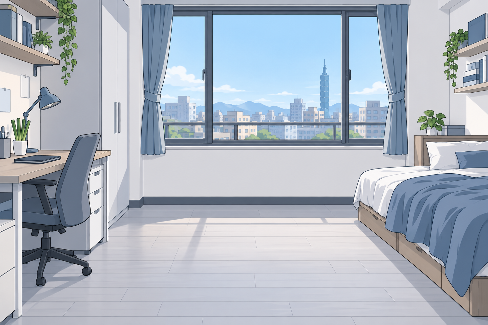

韭
小韭的第二次開盤
A TAIWAN STOCK MARKET ADVENTURE
原型 0.3 · 本機冒險
NEW GAME, SAME LITTLE LEEK.
台股戰士
把命運，重新下單。
工作五年，存下一百萬。
這次重來，想贏過的，是那個只買 0050 的自己。
開始遊戲
從 2020 年重新出發
→
繼續上次旅程
↗
▤ 存檔紀錄
3 個手動欄位 / JSON 備份
上次遊玩數據
↗
還沒有冒險紀錄
每一次決定，都會被留下。
最佳遊玩數據
♧
等你寫下第一個結局
依完整一輪的超額報酬比較。
這次，我有做功課……
應該吧？
初始本金 NT$ 1,000,000
人生重開・交易不重播
先活下來！
不是明牌，是冒險。
✧ 成就跑馬燈
範例展示・尚未實裝判定
🌱 重新發芽
開始第一輪冒險
☕ 咖啡比追高便宜
學會先冷靜
📓 這次有做筆記
留下交易理由
🚶 抬頭看路
手機放下五分鐘
🏆 比平行人生更好
超越那個只買 0050 的自己
🌱 重新發芽
開始第一輪冒險
☕ 咖啡比追高便宜
學會先冷靜
📓 這次有做筆記
留下交易理由
🚶 抬頭看路
手機放下五分鐘
🏆 比平行人生更好
超越那個只買 0050 的自己
韭
台股戰士
TAIGU WARRIOR
遊戲時間 ·
開盤前
2020.01.01
準備迎接第一個交易日
我的總資產
含持股與應收股利
$1,000,000
總報酬 +0.00%
可用現金
$1,000,000
持股市值 $0
0050 平行人生
股利再投入
$1,000,000
總報酬 +0.00%
與 0050 的距離
超額報酬
+0.00
百分點
起跑線一樣，結局由你決定。
☰
選單
⌂ 起始畫面
▤ 存檔管理
? 遊戲說明
♫
BGM 設定
↺ 回顧轉生序章
0050
元大台灣50
ETF
—
—
60 日
120 日
240 日
均線
分割還原
回到今日 ↗
日 K · 真實歷史行情
MA 5
—
MA 20
—
MA 60
—
拖曳回看 · 滾輪縮放
外資
投信
自營商
法人依遊戲規則延後一個交易日
小韭的內心劇場
PROLOGUE / 重新上市
小韭
第一天・重新開始
···
一百萬，不是一串數字。
那是五年不敢亂花的薪水。上一輪，我把決定交給群組。這一輪，先學著把決定拿回來。
劇情會在歷史時間推進時觸發。
A TAIWAN STOCK MARKET ADVENTURE
台股戰士
小韭的第二次開盤
跳過序章 ↗
繼續 →
×
本遊戲需要啟用 JavaScript。行情與存檔均在你的瀏覽器內處理。